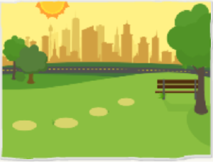
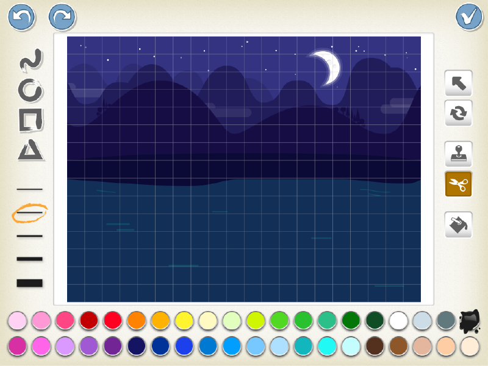
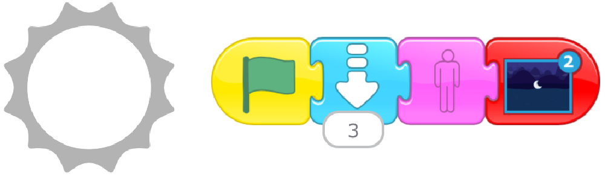

1. Choose Project

Sunset
2. Add a New Page and add Moon Character to New Page
New Page

New Character

OK
Delete the cat (press and hold)
3. Choose Background; Edit to Remove Background’s Moon

New Background

Select the “Cut” tool, and then tap the moon to delete it
OK
4. Change Program on Page 1; Make Program on Page 2
